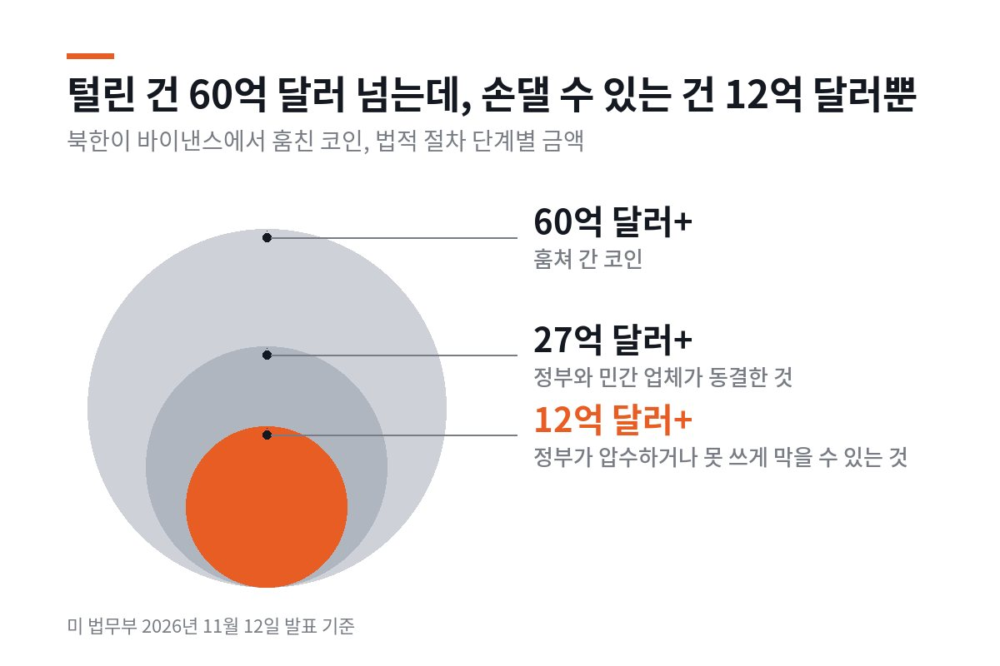

경제
기사 목록

부자 소득세는 이어 가고, 부유세는 거부
캘리포니아 유권자가 억만장자 재산에 한 번 5%를 매기는 발의안을 부결했어요. 같은 날 고소득자 소득세를 영구화하는 발의안은 61% 찬성으로 통과가 유력하고, 주식 같은 금융 자산 보유에 새 세금을 못 매기게 헌법에 적는 발의안도 앞서 있어요.

북한이 털어 간 8조 원, 돌려받을 수 있을까
미 법무부가 북한이 바이낸스에서 훔친 코인 가운데 12억 달러 넘는 돈을 압수하거나 처분을 막을 수 있게 법원 허가를 받았어요. 압수는 반환이 아니에요. 2016년 비트파이넥스 사건은 압수까지 5년 반이 걸렸고, 그 뒤에도 비트파이넥스가 배상받을 피해자인지를 두고 법원에 서류가 오갔어요.

탈퇴 버튼, 몇 번 눌러야 나와요?
공정위가 탈퇴 버튼을 둘째 화면보다 깊이 두면 법 위반 예시로 보는 지침 개정안을 행정예고했어요. 1년 전엔 '권고'에 그쳤던 내용이에요. 아직 확정은 아니에요.

"70 쓸거야" 5초 만에 맞춘 국고채 금리 3.70%
공정위가 국고채전문딜러 15곳에 담합 사건 역대 최대 과징금을 매겼어요. 딜러들은 입찰 직전 전화와 메신저로 금리를 맞췄어요. 실적 인정 같은 딜러 제도가 입찰을 어떻게 움직였는지, 유럽은 비슷한 사건을 어떻게 끝냈는지 따라가 봤어요.

미국 10월 물가, 연간 상승률 없이 나왔다… 1년 전 셧다운이 남긴 빈칸
미국 노동통계국이 11월 10일 10월 소비자물가를 발표했어요. 한 달 상승률은 0.4%였지만, 1년 전과 비교한 상승률은 휘발유 등 세 항목 말고는 내지 않았어요. 2025년 10월에는 정부 셧다운으로 가격 조사가 없었기 때문이에요.

업비트와 네이버페이가 한 지붕 아래 들어가면… 공정위가 아직 없는 '원화 코인' 시장까지 들여다본 이유
업비트와 네이버페이는 하는 일이 다른데, 공정위는 두 회사가 합치면 경쟁이 줄 수 있다고 봤어요. 아직 생기지도 않은 '원화 코인' 시장까지 따져 봤어요. 그래도 결합을 막자는 게 아니라, 조건을 붙이자는 의견이에요.

미국과 유럽은 멈췄는데 영국만 금리를 올렸다… 의사록에 적힌 세 가지 이유
영국 중앙은행이 11월 5일 기준금리를 4%로 올렸어요. 미국과 유로존은 한 주 전 금리를 묶었어요. 영란은행이 든 이유와 영국 가계에 언제 닿는지 따라가 봤어요.

공정위 "배민과 쿠팡이 '다른 앱에선 더 싸게' 막았다"… 유럽은 10년 전 호텔 앱에서 같은 싸움을 했다
공정위가 두 배달앱에 잠정 과징금 6,319억 원을 매겼어요. 같은 조항을 먼저 금지한 유럽에서는 금지 뒤 무엇이 달라졌는지 살펴봤어요.

독과점 회사가 해외보다 한국에서 비싸게 받으면 제재 가능, 공정위 25년 만에 규정 손질 나서
독과점 회사가 그럴 만한 이유 없이 한국에서만 값을 높게 받으면 '가격 남용'으로 볼 수 있게 돼요.

직장인 절반 넘게 월 300만원 이상, 통계 작성 뒤 처음
월 500만원 이상 받는 사람도 17.6%로 상반기 기준 가장 많았어요. 업종에 따라 차이는 컸어요.
실적 발표
전년 같은 분기 대비대표 기업 실적
| 회사 | 매출 | 영업이익 |
|---|---|---|
| 삼성전자 (새 창)26년 3분기 | 195.2조 ▲126.9% | 107.4조 ▲783.1% |
| 현대자동차 (새 창)26년 3분기 | 45.1조 ▼3.4% | 2.7조 ▲5.5% |
| KB금융 (새 창)26년 3분기 | 13.8조 ▲114.5% | 1.6조 0.0% |
| NAVER (새 창)26년 3분기 | 2.0조 ▲7.7% | 3,226억 ▼40.2% |
| 알파벳 (새 창)26년 3분기 | 1,276억 달러 ▲24.7% | 406억 달러 ▲29.9% |
| 월마트 (새 창)26년 2분기 | 1,861억 달러 ▲5.9% | 94억 달러 ▲28.8% |
| JP모건 (새 창)26년 3분기 | 502억 달러 ▲8.1% | 201억 달러 ▲7.4% |
| 코카콜라 (새 창)26년 3분기 | 134억 달러 ▲7.4% | 45억 달러 ▲12.1% |
주요 공시
| 날짜 | 회사 | 내용 |
|---|---|---|
| 11.13 | POSCO홀딩스 (새 창) | 배당 결정 |
| 11.12 | 한화 (새 창) | 자사주 취득 |
| 11.12 | 알테오젠 (새 창) | 합병 |
| 11.11 | 에코프로 (새 창) | 유상증자 |
| 11.11 | 삼양식품 (새 창) | 다른 회사 지분 취득 |
| 11.11 | 삼성바이오로직스 (새 창) | 유상증자 |
| 11.10 | 에코프로비엠 (새 창) | 유상증자 |
| 11.10 | 에코프로비엠 (새 창) | 다른 회사 지분 취득 |
자료: 금융감독원 전자공시(DART)·미국 증권거래위원회(SEC) 공시 원문 · 국내는 잠정 실적·연결 기준 · JP모건 영업이익은 세전이익 · 11.14 12:40 갱신
서울 아파트 실거래
2026년 10월 계약 · 3.3㎡당 중위 가격 · 1년 전보다10월 최고가 거래
- 262억나인원한남용산 한남동 · 274㎡ · 1층 · 10.1
- 143억나인원한남용산 한남동 · 207㎡ · 5층 · 10.3
- 93억신현대11차강남 압구정동 · 183㎡ · 4층 · 10.8
- 92억신현대11차강남 압구정동 · 183㎡ · 12층 · 10.19
- 92억신현대12차강남 압구정동 · 183㎡ · 6층 · 10.21
자료: 국토교통부 아파트 매매 실거래가 · 10월 계약분 중 11월 14일까지 신고된 3,797건 · 해제 거래 제외 · 3.3㎡당 가격은 전용면적 기준 중위값 · 11.14 12:42 갱신